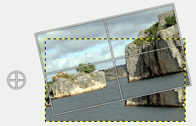

This tool is used to rotate the active layer, a selection or a path. When you click on the image or the selection with this tool a Rotation adjustment dialog is opened. There, you can set the rotation axis, marked with a point, and the rotation angle. You can do the same by dragging the mouse pointer on the image or the rotation point.
There are different possibilities to activate the tool:
-
From the main menu: → → .
-
By clicking the tool icon in the Toolbox.
-
By pressing the Shift+R keyboard shortcut.
Normally, tool options are displayed in a window attached under the Toolbox as soon as you activate a tool. If they are not, you can access them from the main menu through → → which opens the option window of the selected tool. The available tool options can also be accessed by double clicking the corresponding tool icon in the Toolbox.
- Transform, Direction, Interpolation, Clipping, Show image preview, Guides
-
![[Note]](images/note.png)
Note These options are described in Transform tools common options.
- Transform Direction
-
The Transform Direction sets which way or direction a layer is rotated. The Normal mode will rotate the layer as one might expect. If a layer is rotated 10 degrees to the right, then the layer will be rendered as such. This behavior is contrary to Corrective rotation.
Corrective Rotation is primarily used to repair digital images that are not straight. If the image is 13 degrees askew then you need not try to rotate by that angle. By using Corrective Rotation you can rotate visually and line up the layer with the image. Because the transformation is reversed, or performed backwards, the image will be rotated with sufficient angle to correct the error.
- 15 Degrees (Shift)
-
15 Degrees (Shift) will constrain the rotation to angles divisible by 15 degrees.
- Angle
-
Here you can set the rotation angle, from -180° to +180°, i.e. 360°.
- Center X/Y
-
This option allows you to set the position of the rotation center, represented by a cross surrounded by a circle in the image. A click-and-drag on this point also allows you to move this center even outside the image. Default unit of measurement is pixel, but you can change it by using the drop-down list.
Figure 14.105. The rotating center

The layer rotated around the rotating center outside the image
- Readjust button
-
With this button you can reset the transform handles back to the original square shape, while keeping the current transformation and zoom level. This enables you to create more complex transformations by making the transformation in several steps.
|
|
Note |
|---|---|
|
You can also rotate layers with → → . See Section 7.51, “Arbitrary Rotation”. |